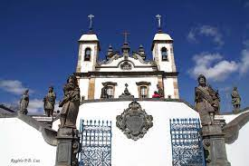

Localização
Os Doze Profetas de Aleijadinho são um conjunto extraordinário de esculturas esculpidas pelo renomado artista brasileiro Antônio Francisco Lisboa, conhecido como Aleijadinho. Localizadas em Congonhas, Minas Gerais, essas esculturas em pedra-sabão retratam profetas bíblicos com expressões e detalhes impressionantes. Consideradas uma das maiores obras-primas do barroco brasileiro, os Doze Profetas são um testemunho do talento e genialidade de Aleijadinho, além de representarem um importante marco artístico e cultural do Brasil.